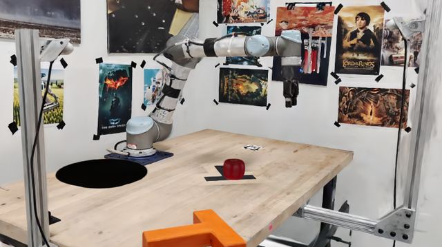
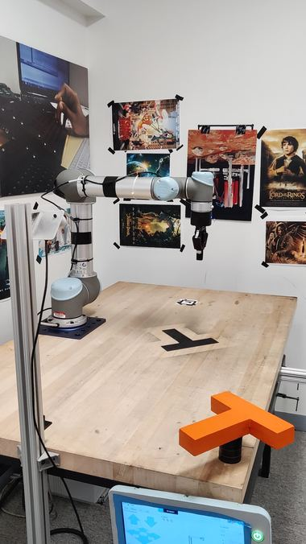
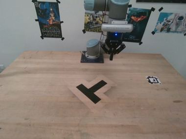
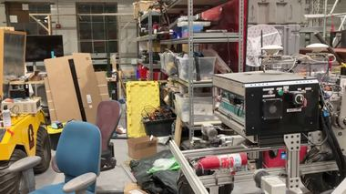
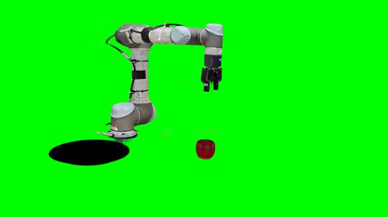
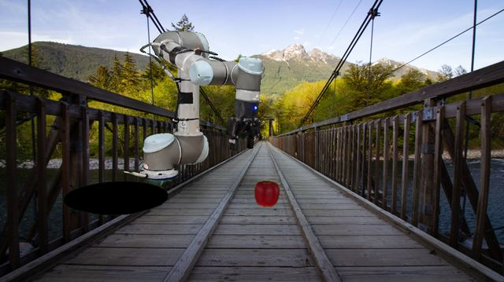

Field notes from installing SplatSim — a Gaussian-splatting robot simulator — on a bare workstation: a dead dependency and a green-screen technique for swapping the room out from under a photorealistic robot render.
SplatSim keeps two representations of the same robot in lock-step: an invisible PyBullet skeleton that knows physics, and a Gaussian Splat — a point cloud trained from real photos of the robot and its workspace — that gets dragged along to match it, frame by frame. Because the splat is built from real photographs, the render looks photorealistic without ever re-rendering geometry from scratch; only the points that belong to the robot move each frame.
The published install steps are accurate but assume a clean run. Ours wasn't. The short version of what it took to get a clean install running:
The actual test of "does this work" isn't the install finishing — it's a rendered frame. Replaying one of the bundled recorded demonstrations through the running server produced this:

Confirms the whole loop end to end — physics, per-link transform, splat render, save — not just that the server started.
The obvious next question — can we render the same task somewhere else — runs straight into how the system is built: the wall, posters, and desk aren't a separate layer, they're part of the exact same trained point cloud as the robot. There's no background asset to simply swap out.
The bundled data included a few other full scenes, but checking their source photos showed why reusing one wasn't a real shortcut:

robot_high — same desk, same posters.
ur_rss — same desk, different posters.
benchmark_highbay — genuinely different room, but a different robot platform entirely.Every UR5-compatible scene in the bundle turned out to be the same physical desk, re-decorated, and the one scene shot somewhere else used an incompatible robot platform. Even reusing one would still require the same manual scene-alignment step as recapturing from scratch, so we opted for a different approach entirely: keep the one working splat, and remove the background computationally.
The render pipeline already computes, every frame, exactly which points belong to the robot — it needs
that split to know what to move. That's also precisely the mask a chroma-key composite needs, so a small
patch makes every other point render fully transparent instead, on an opt-in --greenscreen
flag:

--greenscreen: the robot and apple render cleanly; everything else is forced transparent and shows a pure-green background instead.A standalone compositing script then keys out the green, cleans up edge spill, and pastes in a new background image — entirely as post-processing, with no need to touch the slow-loading server again:

Worth stating plainly: this is a 2D compositing trick, not a new capture. It buys a different-looking backdrop in minutes instead of a full re-scan, at the cost of a shadow that's faked rather than physically consistent, and no real occlusion between the new background and the robot.
Same trajectory, same robot motion — only the backdrop changes:
Everything above is really three different levels of commitment, depending on what already exists.
| Tier | What you get | What it costs |
|---|---|---|
| Reuse | New task logic on the existing robot_iphone scan — new motion/grasp logic, or new demonstrations via GELLO teleop or a scripted agent. |
Copy sim_robot_pybullet_object_on_plate.py as a template; no new capture. |
| New object | A new item (tool, part) in the existing scene, alongside the existing robot. | Film it, run colmap, train a splat (~30–60 min GPU time), add one objects.yaml entry. |
| New robot / scene | A different robot or room entirely, fully independent of what's bundled. | Film + colmap + train, plus a hands-on CloudCompare ICP alignment between a generated URDF point cloud and the trained splat — the one step in this whole pipeline with no shortcut. |
The manual scene-alignment step is the one part of this pipeline with no shortcut, even when reusing someone else's pre-trained scene.
Everything needed to reproduce the green-screen render + compositing pipeline is on GitHub, and locally as a standalone script plus two patches applied on top of a SplatSim checkout:
.gitmodules at a live fork--greenscreen flag